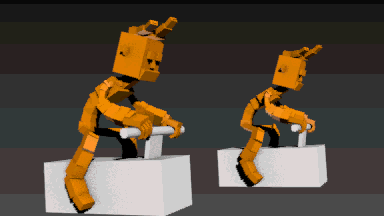
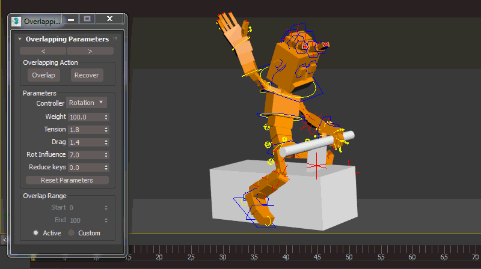

Overlapping Action¶
Overlapping Action feature allows users to add secondary animations to top of keyframe animation.
New Overlapping Action panel comes with update 1.5 allows animators to do all secondary actions at once. Just select controllers which you want and click overlap. You can apply overlapping action to all type of InstantRig controllers.
Note
Overlapping Action panel only works with InstantRig.
Warning
Overlapping Action bakes animations to all frames. Be sure to save a version before using overlapping action. Otherwise you may lose your keyframe animation if you need to retake later.
Quick Start¶
- Select root controller and click “Launch” from modifier stack “Overlapping Action” panel. You can dock panel to left or right by pressing arrows top of panel.
{kind=link}
- Select hip controller, change paramaters as you need and click overlap.
{kind=link}
- Do same for chest and head.
{kind=link}
- Then select FK controllers in a row and click overlap after entering desired values.
Note
Order is important! Start selecting where the force come from. Otherwise you may encounter strange secondary animation.
{kind=link}
Overlap Attributes¶
- Overlap:
- Calculates and bakes overlap animations. It saves animation to folder named “recoverAnim” to place where your max file saved before baking new animations.
- Recover:
- Recover loads last animation. If you didnt satisfy overlapped animation with current attributes. You can recover last animation and recalculate overlap with new attributes.
- Controller:
- It allows animator to overlap only position, only rotation or both.
- Weight:
- Multiplier of secondary animation. You can increase or decrease influence.
- Tension:
- If you assume it’s a guitar string, this attribute adjust tightness of string.
- Drag:
- If you assume it’s a guitar string, this attribute adjust density of air. High value means you play guitar in the water.
- Rot Influence:
- It limits maximum rotation of controller to protect controller from getting flipped if animations are too fast.
- Reduce keys:
- Once animation is overlapped it bakes all animations frame by frame. This value reduce keys after animation baked up to this value. Higher value may cause lose fluency of animation.
- Overlap Range:
- It allows to set range or use active time range for overlapping action.